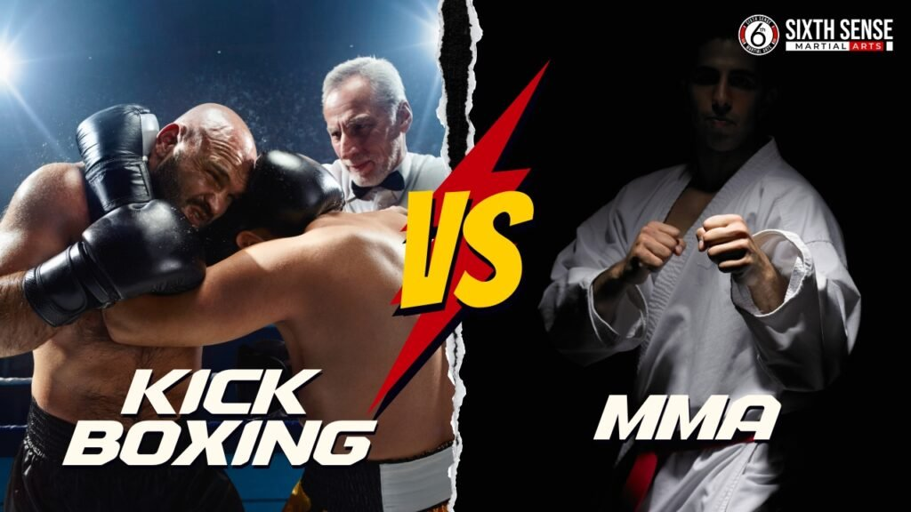
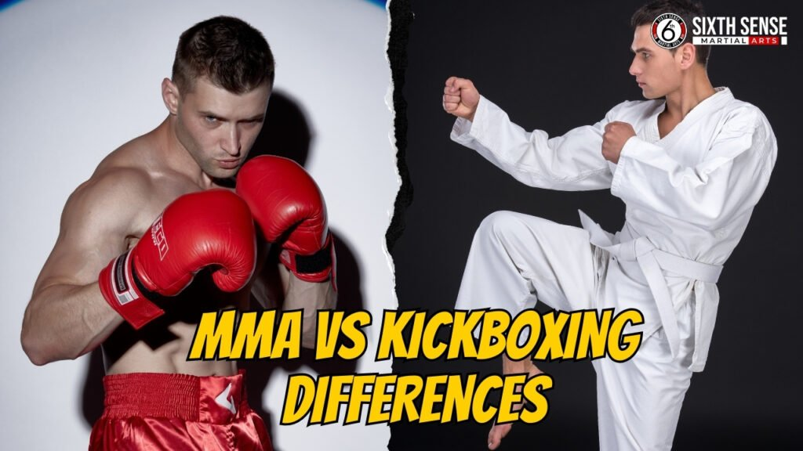
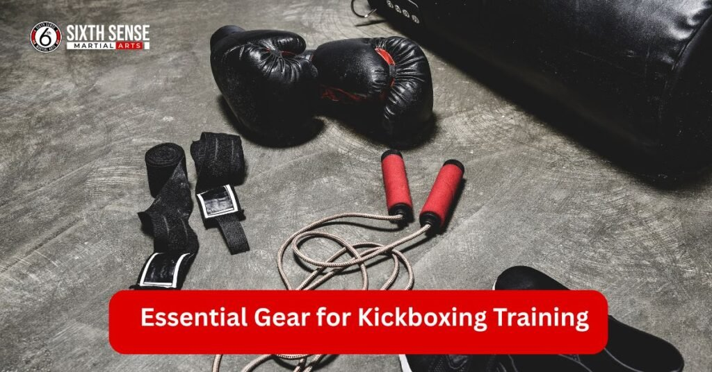

MMA vs Kickboxing for Self Defense: Which Martial Art Wins?

MMA vs Kickboxing for self defense: When choosing between these two martial arts, it’s important to consider the unique strengths each offers. Kickboxing excels in stand-up combat, focusing on powerful punches and kicks, while MMA integrates a variety of disciplines, including wrestling and ground fighting, for a more comprehensive approach.
MMA training classes combine striking techniques, grappling, and submissions, making it ideal for handling attackers in close quarters or on the mat. Kickboxing, on the other hand, focuses on knee and elbow strikes to control distance. While both arts boost fitness levels and build confidence, MMA’s ability to incorporate both striking and ground fighting gives it an edge in real-life self-defense scenarios. Kickboxing may be more suited for situations involving stand-up defense, but MMA offers greater versatility and adaptability.
What Is MMA?
MMA, or mixed martial arts, is a combat sport that combines techniques from various disciplines such as boxing, wrestling, Muay Thai, and Brazilian Jiu-Jitsu. MMA fighters train in both striking and grappling, with ground fighting and submissions being key components. The UFC helped popularize MMA, showcasing the versatility of fighters who can seamlessly switch between striking and grappling techniques.
MMA gyms cater to all skill levels, and training focuses on building proficiency step by step. While MMA shares some similarities with kickboxing in striking, it stands out with its broader range of techniques, including takedowns, submissions, and clinch work.
What Is Kickboxing?
Kickboxing blends elements of karate and boxing, with an emphasis on powerful kicks and punches. It is a stand-up fighting style, designed to deliver power from the legs and upper body. Kickboxing is highly effective in self-defense scenarios, where controlling the distance from an attacker is key.
However, it lacks ground fighting techniques, making it less versatile than MMA in certain situations. Kickboxers focus on punch combos, knee strikes, and kicks like the roundhouse, with some styles incorporating elbow strikes. While kickboxing is a great workout that builds strength and cardio, its rules and techniques are limited to strikes, with no grappling or ground fighting.
MMA vs Kickboxing Differences
MMA and kickboxing offer distinct benefits depending on your goals. Kickboxing focuses on mastering striking techniques, making it effective for stand-up defense. However, MMA’s well-rounded nature, including striking, grappling, and submissions, gives it a significant edge in real-life situations, especially when dealing with attacks on the ground.
MMA fighters often cross-train in kickboxing to enhance their striking, combining the best of both worlds. While kickboxing offers speed and power for self-defense, MMA’s versatility in different combat ranges makes it the more adaptable option for various scenarios.

Striking and Grappling: MMA’s Versatility
MMA incorporates both striking and grappling, allowing fighters to control opponents in a variety of situations, from standing to on the ground. In contrast, kickboxing is solely focused on striking.
While kickboxing excels at delivering powerful punches and kicks, MMA’s ability to adapt and apply a wider range of techniques, such as takedowns, clinches, and submissions, makes it a more versatile combat sport overall. MMA training also includes aspects of kickboxing, Muay Thai, and boxing, giving fighters the advantage of a complete skill set for handling different types of attacks.
Differences Between MMA and Kickboxing
| Aspect | MMA | Kickboxing |
|---|---|---|
| Scope | Includes ground work and stand-up | Stays upright, no ground work |
| Techniques | Striking and grappling (takedowns, submissions) | Pure strikes (punches, kicks) |
| Shared Moves | Punches and kicks | Punches and kicks |
| Rules | Allows all (ground, clinch, takedowns) | Bans ground work, limited clinch |
| Focus | Sport and versatility | Sport and fitness |
| Fighting Style | Varies (adaptable, full contact) | Aggressive, stand-up focused |
| Gear | Boxing gloves, mats for ground | Boxing gloves, focus on stand-up gear |
| Technique Range | Broader range (takedowns, grappling) | Limited to striking techniques |
| Opponent Control | Differs (ground and stand-up control) | Distance-based control |
| Training Influence | Overlaps with boxing, wrestling | Influenced by boxing, muay thai |
| Punch/Kick Style | Punch variety, powerful kicks | Punch heavy (American), powerful kicks |
| Versatility | Requires versatility, well-rounded | Stand-up fun, less versatile |
| Martial Arts Debate | Might overwhelm, superior for defense | Highlights gaps, striking discipline |
| Cultural Variants | Includes Dutch kickboxing influence | Includes American, Dutch styles |
| Additional Training | Mma fighters train strikes, grappling | Kickboxers train strikes, muay thai elements |
| Equipment | Thai pads, boxing bags, mats | Thai pads, boxing bags |
| Comparison Outcome | Wins vs kickboxing in versatility | Reveals limits vs mma |
| Self-Defense | Favors mma for self defense | Effective stand-up self defense |
| Workout Intensity | Similar intensity, diverse training | Similar intensity, repetitive training |
| Real-World Scenario | Adaptable (clinch, wrestling, ground) | Exposed in street fights (no ground) |
Origins and History
Kickboxing emerged in the 1960s, blending karate and boxing, with influences from Muay Thai. Boxing, with its ancient roots, shaped the early evolution of combat sports. MMA formalized in the 1990s through UFC, combining elements of wrestling, Jiu-Jitsu, and Muay Thai. Kickboxing focused on strikes, adding techniques like elbow strikes over time.
MMA evolved by mixing striking and grappling techniques, drawing from historical combat practices. Both sports honor traditional methods, with MMA incorporating ancient wrestling and Muay Thai. Training in both disciplines emphasizes cardio, control, and defense. Over the years, both MMA and kickboxing have adapted, maintaining respect for their martial arts heritage.ol. Mma fighters also honor. Like muay thai ancient. Thai pads traditional.
Evolution of MMA
MMA evolved from early Greek pancration, which combined strikes and grapples, to the modern UFC in 1993, making it mainstream. As the sport grew, rules adapted for safety, and MMA gyms became global. Training classes incorporated Jiu-Jitsu, wrestling, and Muay Thai, with a strong emphasis on ground fighting and submissions. Over time, MMA fighters became more versatile, integrating punch, kick, and clinch techniques.
While kickboxing remained focused on striking, MMA evolved to blend grappling and striking. The popularity of MMA grew, and fighters developed advanced takedowns, clinch work, and takedown defense. Both MMA and kickboxing influenced each other, but MMA has become the more integrated combat sport, with broader techniques and an emphasis on versatility.
Roots of Kickboxing
Kickboxing traces its roots to 1950s Japan, where Osamu Noguchi combined karate and Muay Thai. In the 1970s, American promoters adapted this hybrid, incorporating the knees and elbows of Muay Thai and the punches of Western boxing. Striking techniques, including punches and kicks, formed the core of kickboxing, which focused on power and stand-up combat. Kickboxing rules were designed to limit grappling and ground fighting, keeping the action focused on strikes.
As kickboxing spread globally, gyms emerged, and it became a professional sport. The aggressive fighting style and use of boxing gloves became iconic, with training emphasizing punch-oriented techniques.
While MMA evolved to incorporate a broader range of skills, kickboxing remained rooted in striking. MMA fighters often start with kickboxing training, but the sport later expanded to include grappling and ground fighting. Kickboxing’s focus on power and striking continues to influence MMA, with Thai pads and elbow strikes as key elements in both sports.
How Muay Thai Influences Kickboxing
Muay Thai greatly influences kickboxing through its “eight limbs” approach, incorporating punches, kicks, elbows, and knees. The addition of knee and elbow strikes, along with the use of Thai pads for training, brings authenticity to kickboxing. The roundhouse and front kicks are shared between the two styles, with Muay Thai’s emphasis on clinch work adding a unique dimension.
The aggressive fighting style of Muay Thai contributes to a grueling workout and a focus on cardio, making it a cornerstone in kickboxing training. While Muay Thai does not include grappling or ground fighting, its striking techniques, particularly the use of elbows, knees, and powerful kicks, have been adopted by MMA fighters as well. Kickboxing with a Muay Thai influence offers a more varied and well-rounded approach to self-defense. MMA has also integrated these striking techniques, making Muay Thai a key component of modern combat sports.
Techniques and Fighting Styles Compared
Kickboxing and MMA differ significantly in their techniques and fighting styles. Kickboxing focuses on aggressive striking, using punches, kicks, knee strikes, and elbow strikes. In contrast, MMA integrates grappling, submissions, and ground fighting. While kickboxing is more forward-moving and attack-oriented, MMA fighters adapt their positioning based on the situation.
In kickboxing, techniques like the front kick and roundhouse kick are used for distance and damage, while knee strikes and elbows are powerful close-range tools. MMA fighters mix these strikes with takedowns and submissions, making their style more adaptable.
The techniques in MMA are broader, including grappling, control, and finishing moves, while kickboxing prioritizes precise, powerful strikes. Both sports share striking fundamentals, but MMA offers a more diverse set of techniques, incorporating punches, kicks, and submissions for a well-rounded approach. Kickboxing, on the other hand, remains focused on effective striking and self-defense.
Striking in Kickboxing vs MMA
| Aspect | Striking in Kickboxing | Striking in MMA |
|---|---|---|
| Focus | All about stand-up strikes | Part of a broader striking and grappling mix |
| Primary Techniques | Dominated by punches and kicks | Includes punches and kicks, plus knee and elbow strikes in some |
| Specific Strikes | Front kick pushes, roundhouse kick damages, boxing punches precise | Front kick strikes jab, integrates with grappling and ground |
| Technique Refinement | Striking techniques refined, focuses on strikes | Striking techniques integrated, versatile with other skills |
| Skill Level | Proficient in striking, specialized for kickboxers | Proficient in striking, balanced with grappling for MMA practitioners |
| Martial Art Influence | Strikes vary, influenced by boxing and muay thai kickboxing | Strikes vary, influenced by western boxing, muay thai |
| Strike Style | Hand and leg strikes (boxing and kickboxing) | Hand and leg strikes, eight limbs from muay thai |
| Training Approach | Art of kickboxing strikes as an art, drills in class | MMA training integrates strikes with other techniques |
| Comparison | Vs MMA strikes similar, limited to ground | Vs kickboxing strikes plus more, includes ground transitions |
| Choice | MMA or kickboxing strikes choice, kickboxing for self defense effective | MMA vs kickboxing strike compare, favors versatility |
| Additional Influence | Like muay thai strikes add, Dutch kickboxing strikes aggressive | Like muay thai strikes add, MMA fighters also strike hard |
| Nature | Kickboxing is a striking pure, offers strikes fun | MMA is better strikes plus, considered strikes versatile |
| Opponent Control | Control an opponent strikes distance | Control an opponent strikes setup for takedown defense |
| Technique Range | Broader range of techniques strikes limited to stand-up | Broader range of techniques strikes with MMA rules |
| Gear | Boxing gloves strikes protect | Boxing gloves strikes protect, used in grappling context |
| Fighting Style | Strikes forward, modern kickboxing strikes modern | Strikes forward, transitions to grappling and ground fighting |
| Rules | Kickboxing rules strikes only | MMA rules strikes allow, includes post-strike options |
| Basic Moves | Punches and kicks strikes basic, defined by striking techniques | Punches and kicks strikes basic, enhanced by versatility |
| Cultural Impact | Western boxing strikes influence, American kickboxing strikes punch | Western boxing strikes influence, muay thai strikes debate |
| Practical Use | Kickboxing for self defense strikes practical, kickboxer strikes rely | MMA training classes strikes part of self-defense strategy |
| Training Environment | Kickboxing gyms strikes teach, art of kickboxing strikes hone | MMA training strikes integrate with broader skills |
Ground Game: Why MMA Stands Out
- Unique Core Strength
- Ground game sets MMA apart completely, focusing on ground fighting and grappling.
- Kickboxing lacks any ground element, making it distinct from MMA.
- Key Techniques
- Grappling and ground fighting are core to MMA, securing dominance in fights.
- Submissions lock joints, providing a decisive edge.
- Takedowns initiate ground control, shifting the fight’s direction.
- Wrestling controls positions, adding strategic depth.
- Clinch leads to ground, bridging stand-up and ground phases.
- Fight Dynamics
- Ground fighting shifts fight dynamics, offering versatile outcomes.
- Grapple secures dominance, a skill MMA excels in.
- Mixed martial arts stands out with its ground proficiency.
- Self-Defense Relevance
- Self-defense often goes to the ground, where MMA shines.
- Street fights commonly end on the mat, favoring MMA’s approach.
- Attacker taken down effectively with MMA ground skills.
- Control an opponent on the ground is key for MMA practitioners.
- Technique Range
- Broader range of techniques on the ground gives MMA an advantage.
- Range of techniques ground vast, enhancing MMA’s adaptability.
- Striking techniques transition to ground, like punches and kicks from MMA.
- Ground fighting includes ground and pound, a powerful tactic.
- Skill Mastery
- MMA practitioners master ground techniques, making them ground savvy.
- Takedown defense prevents opponents from gaining control.
- MMA requires ground skills, setting a high skill bar.
- Martial artist ground specialist in MMA, unlike other styles.
- Superiority
- MMA is considered superior on the ground due to its comprehensive training.
- MMA is better for ground scenarios, offering practical solutions.
- MMA might save in grapples, a critical self-defense asset.
- Martial arts vs ground rare, but MMA’s ground focus wins.
- Comparison to Kickboxing
- Kickboxer vulnerable on the ground, lacking relevant skills.
- Kickboxing gyms offer no ground training.
- Modern kickboxing excludes ground work entirely.
- Vs kickboxing ground advantage clearly favors MMA.
- Kickboxing vs no ground, highlighting a significant gap.
- Kickboxing vs MMA ground difference is stark.
- MMA or kickboxing ground pick MMA for superiority.
- MMA vs kickboxing ground win goes to MMA.
- Training and Rules
- MMA training includes ground drills, building expertise.
- Kickboxing class offers no ground preparation.
- Art of kickboxing lacks ground focus.
- MMA rules ground allow, supporting its ground game.
- Kickboxing for self defense ground weak without ground skills.
- Influence and Limitations
- Western boxing no ground, limiting its scope.
- Striking and grappling ground link unique to MMA.
- Boxing and kickboxing no ground, contrasting MMA.
- Muay thai clinch but no full ground, partial influence.
- Kickboxing focuses no ground, relying on stand-up.
- Boxing vs muay thai no ground, unlike MMA’s adaptability.
- Fighting style ground adaptive only in MMA.
- Boxing gloves used for ground pound in MMA.
- American kickboxing no ground, similar to Dutch kickboxing.
- Kickboxing offer no ground, unlike MMA’s inclusive approach.
- Boxing bags no ground, focused on striking.
- MMA fighters also ground trained, adding depth.
- Like muay thai clinch to ground, but MMA takes it further.
- Thai pads no ground, emphasizing MMA’s unique edge.
- Practical Outcomes
- Self defense ground escape vital, mastered in MMA.
- Fighter ground aware, a key MMA trait.
- Kick no ground, limiting kickboxing’s effectiveness.
- Self-defense ground prep critical, where MMA excels.
- Martial art ground focus MMA, setting it apart.
- Combat sport ground exciting, showcasing MMA’s appeal.
- Well-rounded includes ground, a hallmark of MMA.
- Submission arts shine in MMA’s ground game.
Common Moves in Each Discipline
Kickboxing
- Roundhouse Kick – Powerful leg arc to hit hard.
- Front Kick – Quick push to keep distance.
- Punch Combos – Fast punch chains for attack.
- Knee Strikes – Upward strikes from Thai style.
- Elbow Strikes – Sharp close-range slashes.
- Boxing Punches – Jab and cross for precision.
- American Kicks – Punch-heavy stand-up moves.
- Dutch Combos – Aggressive strike chains.
- Muay Thai Moves – Limb strikes add flair.
MMA
- Grapple – Secures control, shifts to ground.
- Ground Moves – Positions on the mat.
- Submissions – Joint locks to finish.
- Takedowns – Brings fights to ground.
- Clinch – Close control to ground.
- Wrestling – Pins for dominance.
- Mixed Moves – Blends all for thrill.
Shared Moves
- Punches & Kicks – Basic strikes in both.
- Front Kick – Push in both styles.
- Roundhouse Kick – Strong arc hit.
- Elbow Strikes – Close-range in both.
- Knee Strikes – Upward power shared.
- Punch Moves – Quick hand strikes.
- Kick Moves – Leg attacks common.
Training & Use
- Kickboxing Drills – Strike practice focus.
- MMA Training – Diverse move set.
- Self-Defense – Practical in both, MMA adds ground.
Compare
- Versatility – MMA wins with ground moves.
- Kickboxing Limit – Stands only, no ground.
Rules and Regulations
Kickboxing and MMA are governed by distinct rules. Kickboxing focuses on stand-up combat, with no ground fighting or grappling allowed, and matches are typically timed in rounds. MMA, on the other hand, permits strikes, grapples, submissions, and ground fighting, making it a more comprehensive combat sport.
While kickboxing emphasizes striking techniques like punches, kicks, elbows, and knees, MMA incorporates a wider range of tactics, including clinches, takedowns, and submissions. These rules influence the focus of training in each sport, with kickboxing gyms concentrating on stand-up techniques and MMA gyms training fighters to adapt to both striking and grappling.
MMA Rules Explained
MMA follows unified rules that cover both stand-up and ground phases. The fights are typically broken into five-minute rounds, allowing strikes, grapples, and submissions. Ground fighting is unlimited, and the clinch is permitted, but fouls are strictly regulated. MMA practitioners must understand these rules to effectively train and compete, as the sport requires adaptability across various techniques.
Kickboxing Rules Breakdown
Kickboxing’s rules are simpler, focusing on punches and kicks. While the use of knees and elbows is allowed, clinch work is limited, and ground fighting is prohibited. Kickboxing matches are typically short, with three-minute rounds. The sport places heavy emphasis on offensive striking, particularly punches and kicks, with minimal emphasis on defensive grappling.
How Rules Impact Self-Defense Application
In real-life self-defense situations, the lack of rules in street fights makes MMA a more adaptable choice for practical defense. While kickboxing provides solid techniques for stand-up defense, MMA’s broader range of skills, including takedowns and submissions, makes it better suited for unpredictable encounters. The absence of structured rounds or fouls in street fights means MMA fighters, who are trained for chaos, might have an edge in real-world scenarios.
Gear and Equipment Needed
Both kickboxing and MMA require specific gear for safety. Kickboxing typically involves boxing gloves, shin guards, and mouthguards, while MMA also requires rashguards, headgear (for beginners), and mats for ground work. Kickboxing gyms provide the basics, focusing on light gear for striking practice, while MMA gyms offer a wider variety to support both striking and grappling techniques. Each sport’s gear is designed to protect fighters during their specific training and matches, with MMA requiring more versatile equipment due to its broader range of techniques.

Essential Gear for Kickboxing Training
Kickboxing requires essential gear such as boxing gloves for hand protection, shin guards for the legs, and a mouthguard for teeth protection. Headgear is optional for beginners, while ankle supports help with stability. Kickboxing gyms provide some gear, but many kickboxers invest in their own.
The focus is on striking, with equipment designed to cushion punches and kicks, especially the front kick and roundhouse kick. Muay Thai influences kickboxing with the inclusion of elbow and knee strikes. Kickboxing training often includes the use of boxing bags and Thai pads to refine techniques.
MMA Gear Requirements
MMA gear includes rashguards, grappling shorts, and a mandatory mouthguard. MMA gloves are smaller than boxing gloves, and shin guards are used in some cases. Headgear is worn during sparring, and mats are essential for ground fighting.
MMA practitioners require diverse gear to support both striking and grappling techniques. Takedown defense and submissions are central to MMA training, so gear must offer flexibility and protection during all phases of combat.
Protective Attire for Self-Defense Scenarios
In self-defense situations, protective attire is minimal, often consisting of street clothes. Gear from training carries over, but awareness and adaptability are key. Sturdy shoes can be helpful, but gloves and headgear are not typically practical.
The goal is to adapt to the situation and use what’s available. MMA and kickboxing attire is more specialized, with MMA fighters needing versatile gear for various techniques. In contrast, kickboxing attire focuses on lightness for agility, while self-defense attire is designed for flexibility and comfort in everyday situations.
Pros and Cons for Self-Defense
| Category | Pros | Cons |
|---|---|---|
| Kickboxing | Quick strikes, distance management, power in punches and kicks, cardio, effective stand, simple to start, workout fun, roundhouse kick, front kick, elbow strikes, knee strikes, direct fighting style, accessible training, practical, punch speed, sharp striking techniques, simple rules, local gyms, master skills, fun, pure striking | Limited ground skills, limited range of techniques, less focus on grappling |
| MMA | Versatile, covers all ranges, ground coverage, well-rounded, complete fighter, diverse training, adaptable, MMA rules, broader techniques, mix of styles, more commitment, versatile practitioners, crucial takedown defense, control opponent, strategic stance, mix of striking and grappling | Steeper learning curve, requires commitment, ground-focused, complex skills |
| Self-Defense | Effective, practical, boosts confidence, simple, quick reflexes, easy to master, powerful strikes, boosts cardio, builds endurance, effective for escapes, adapts to different situations | Injuries, surprise attacks, limited focus on ground defense |
| Martial Art | Traditional, specialized, discipline, structured techniques | Narrower focus compared to MMA, less practical in modern street situations |
| Boxing | Punch speed, simple, clean punches, sharp techniques, hand-focused, effective in striking | Limited to punches, less versatility than MMA or kickboxing |
| Muay Thai | Tough, strong kicks and strikes, great for clinch, strikes with elbows, knees, elbows, legs | Focused on stand-up, limited ground or takedown skills |
| Wrestling | Excellent for pinning, controlling opponent | No focus on striking or submissions |
| Grappling | Control opponent, ground fighting, strong submission skills | Limited to ground situations, less effective in stand-up or striking |
| Combat Sport | Exciting, thrilling, develops resilience, strategy, adaptability | Risk of injury, requires long-term training |
| Street Fight | Real-life scenario, natural instinct, raw, survival-focused | Unpredictable, no rules, higher injury risk, less structured training |
| Karate | Strong stances, discipline, effective for self-defense, adaptable | Limited focus on full-contact, limited in real-life situations |
| UFC | Inspires, professional level, mixes multiple techniques, broad appeal | High-risk, requires extreme training, injury-prone |
| Kickboxing vs MMA | Strike-based, faster, simple techniques | MMA has more options (striking and grappling), MMA’s better for versatility |
| Muay Thai Kickboxing | Powerful limbs, effective close-range, knee strikes, elbow strikes | Less versatile than MMA, lack of ground skills |
| MMA and Kickboxing | Both have striking, MMA adds grappling, versatile for self-defense | Kickboxing is limited in comparison, MMA more complex |
| Fighter | Adaptability, flexibility, mix of techniques, street-smart | Risk of injury, requires consistent training |
| Kickboxing Class | Focused training, practical techniques, accessible for beginners | Limited in terms of grappling and ground fighting |
| Art of Kickboxing | Precise, effective for stand-up defense, simple techniques | Less versatile compared to MMA, no ground skills |
| Boxing Training | Sharp, fast punches, effective for power punches | Limited to punches, lacks kickboxing or MMA techniques |
| Kickboxing Focuses | Power-focused, strong kicks and punches, effective for self-defense | Limited grappling, less versatile than MMA |
Benefits of MMA in Real-World Defense
MMA Benefits
- Versatility
- Adapts to varied threats with a mix of striking, grappling, and ground skills.
- Ground Fighting
- Handles takedowns and controls fights on the ground effectively.
- Submissions
- Quickly ends conflicts by locking joints or forcing surrender.
- Takedowns
- Controls aggressors by bringing them to the ground.
- Adaptive Fighting Style
- Adjusts to any situation, from stand-up to ground combat.
- Well-Rounded Skills
- Combines striking, grappling, and wrestling for complete defense.
- Real-World Effectiveness
- Considered top for practical street fight scenarios.
Kickboxing Benefits
- Precise Striking
- Delivers accurate and powerful stand-up strikes.
- Stand-Up Defense
- Effective for self-defense in upright positions.
- Quick Punches & Kicks
- Offers fast, basic moves for immediate response.
- Muay Thai Influence
- Adds limb strikes like elbows and knees for versatility.
- Endurance
- Sustains energy with cardio-focused training.
Descriptions
- Versatility (MMA)
- MMA’s blend of skills allows fighters to switch tactics—striking when standing, grappling when close, and ground fighting when down—making it ideal against unpredictable threats.
- Ground Fighting (MMA)
- Enables control and defense on the ground, a common street fight outcome, neutralizing takedown attempts.
- Submissions (MMA)
- Techniques like arm locks or chokes can end a fight fast, overpowering an aggressor without prolonged struggle.
- Takedowns (MMA)
- Brings an attacker down to limit their mobility, giving the fighter upper hand.
- Adaptive Fighting Style (MMA)
- Flexibly shifts between offense and defense based on the fight’s flow, enhancing survival odds.
- Well-Rounded Skills (MMA)
- Integrates boxing, Muay Thai, wrestling, and jiu-jitsu, preparing fighters for any combat scenario.
- Real-World Effectiveness (MMA)
- Proven in UFC and training, it’s seen as the most practical for chaotic street conditions.
- Precise Striking (Kickboxing)
- Focuses on sharp, targeted strikes (punches, kicks) to disable opponents quickly in stand-up.
- Stand-Up Defense (Kickboxing)
- Excels at keeping distance and striking, useful if the fight stays upright.
- Quick Punches & Kicks (Kickboxing)
- Provides immediate, instinctive moves to counter sudden attacks.
- Muay Thai Influence (Kickboxing)
- Incorporates elbows and knees, adding close-range striking power.
- Endurance (Kickboxing)
- Builds stamina through repetitive drills, helping sustain effort in a fight.
Limitations of Each in Street Fights
| Aspect | Limitations in Kickboxing | Limitations in MMA |
|---|---|---|
| Ground Skills | No ground defense when down | N/A (strong ground skills) |
| Combat Scope | Limited to stand-up only | N/A (covers stand-up and ground) |
| Self-Defense Range | Narrow scope, strike-focused | Better but limited by time to master |
| Control Distance | Weak in close quarters | N/A (effective in close and ground) |
| Takedowns/Submissions | Cannot perform takedowns or submissions | N/A (includes takedowns and submissions) |
| Technique Balance | Power over adaptability | N/A (balanced techniques) |
| Clinch Duration | Short clinch time restricts control | N/A (strong clinch transitions) |
| Skill Complexity | N/A (simpler to learn) | Hard to master quickly |
| Energy Management | N/A (less energy drain) | Drains energy in prolonged fights |
| Training Time | N/A (quicker to learn) | Requires long-term commitment |
| Learning Curve | N/A (straightforward) | Mixed techniques need time to integrate |
| Chaotic Environment | Exposed by no-rule chaos | Exposed by no-rule chaos |
| Multiple Attackers | Struggles against groups | Struggles against groups |
| Basic Strikes | Punches and kicks may not suffice | Punches and kicks may not suffice |
| Training Focus | Lacks ground prep, too focused | Intense, broad but demanding |
| Precision in Chaos | Too precise for street fights | N/A (adaptable to chaos) |
| Fitness Under Stress | Cardio/reps may falter | Cardio/reps may falter |
| Equipment Relevance | Bags/pads don’t mimic real fights | Bags/pads don’t mimic real fights |
| Front Kick | Limited if opponent closes in | Limited if opponent closes in |
| Roundhouse Kick | Arc exposes leg to grabs | Arc exposes leg to grabs |
| Elbow Strikes | Effective only up close | Effective only up close |
| Knee Strikes | Needs close range | Needs close range |
| Punch Limits | Quick but weak vs grapplers | Quick but weak vs grapplers |
| Kick Limits | Vulnerable if caught | Vulnerable if caught |
| Ground Advantage | Lacks ground, major gap | Edge with ground skills |
| Strike-Only Focus | Limited to strikes | Includes more than strikes |
| Versatility Gap | More constrained | Less limited |
| Rule Restrictions | Stand-only rules | No significant rule limitations |
Which Is Better for Self-Defense MMA or Kickboxing?
When it comes to self-defense, MMA tends to be the better choice due to its versatility. While kickboxing offers a solid foundation in stand-up fighting, MMA also covers ground scenarios, which are common in real-life encounters.
MMA’s broader range of techniques, including grappling and submissions, gives it an edge for practical defense. Kickboxing, however, is still a good start, focusing on effective striking techniques for stand-up self-defense. MMA’s adaptability makes it more comprehensive for unpredictable situations, such as street fights, where attacks can go to the ground.
Factors to Consider in Choosing
When deciding between MMA and kickboxing, several factors come into play. Beginners may prefer kickboxing for its focused and simple striking techniques, while advanced practitioners might lean towards MMA for its depth and versatility.
Time availability, personal fitness levels, and access to gyms are key factors, with MMA offering more diverse training options but requiring a deeper commitment. Self-defense and fitness goals may drive your choice, with MMA being ideal for overall preparedness and kickboxing for a focused striking approach.
Real-Life Effectiveness Comparison
In real-life scenarios, MMA generally provides a broader skill set for defense. Kickboxing is highly effective in stand-up encounters, offering quick and powerful strikes.
However, in street fights where the ground is often involved, MMA’s grappling, takedowns, and submissions make it the more effective choice. While both martial arts share similarities, MMA’s adaptability and comprehensive techniques give it the edge in handling varied threats, making it the better option for self-defense.
Expert Opinions on MMA vs Kickboxing
| Aspect | Expert Opinions on MMA | Expert Opinions on Kickboxing |
|---|---|---|
| Self-Defense Preference | Tilt towards MMA for versatility | Praised for striking but limited without ground |
| Trainer Recommendations | Recommend MMA for diverse skills | Focus on speed and striking proficiency |
| Ground Advantage | Experts highlight ground fighting strength | No ground, experts stress stand-up speed |
| Versatility | Favored for broader range and adaptability | Limited to stand-up, less versatile |
| Comparison | Vs kickboxing, MMA opinions dominate | Vs MMA, opinions favor stand-up only |
| Ground Focus | Opinions emphasize ground techniques | Opinions lack ground, focus on strikes |
| Shared Elements | Shares strikes with kickboxing | Shares strikes, but no ground overlap |
| Choice Preference | Opinions lean towards MMA | Opinions suggest kickboxing for specific needs |
| Training Approach | Diverse training opinions | Focused striking class opinions |
| Artistic Precision | Seen as complete, less art-focused | Precise art of kickboxing opinions |
| Self-Defense Style | Effective with ground and stand-up | Stand-up self-defense opinions |
| Western Influence | Incorporates boxing punches | Boxing punch focus opinions |
| Technique Range | Broader range, opinions favor MMA | Limited range, opinions on power strikes |
| Rules Complexity | Opinions on all-inclusive rules | Simple rules opinions |
| Martial Art Expertise | Specialists unite various styles | Specialists focus on striking mastery |
| Strike Focus | Combines striking and grappling | Hand and leg strike opinions |
| Muay Thai Influence | Integrates limb techniques | Limb strike opinions from Muay Thai |
| Modern Trends | Global appeal, UFC inspires opinions | Global modern kickboxing opinions |
| Gym Accessibility | Diverse training environments | Accessible, strike-focused gyms |
| Fighter Skill | Versatile kickboxers and grapplers | Masters of striking opinions |
| Cultural Styles | Blends American and Dutch influences | American punch-heavy, Dutch aggressive opinions |
| Training Fun | Offers diverse move excitement | Fun strike-focused opinions |
| Striking Nature | Strikes plus grappling opinions | Pure striking opinions |
| Equipment Use | Uses bags and pads for all moves | Bags and pads for striking drills |
| Muay Thai Addition | Adds Thai techniques to mix | Adds Thai flair to strikes |
| Opponent Control | Key with ground and clinch | Distance control opinions |
| Boxing Training | Sharp punches integrated | Clean punch training opinions |
| Commitment Level | Requires high commitment opinions | Focused striking commitment |
| Practitioner Versatility | Versatile skill set opinions | Striking proficiency goal |
| Takedown Defense | Crucial for ground safety | Not needed, no ground focus |
| Technique Opinions | Wide range, front kick push, roundhouse arc | Power strikes, elbow slash, knee up |
| Clinch & Takedowns | Control and down moves praised | Limited clinch, no takedowns |
| Submissions & Ground | Lock and position moves lauded | No submissions or ground opinions |
| Grapple Strength | Secures dominance opinions | No grapple focus |
| Unified Approach | Unites martial arts opinions | Strike-only unification |
| Basic Moves | Quick punches, leg kicks | Quick punches, leg kicks |
| Fighter Adaptability | Adjusts to all scenarios | Adjusts to stand-up only |
| Practicality | Effective self-defense opinions | Practical stand-up defense |
| Martial Art Style | Practical and tough opinions | Simple box or tough Muay Thai |
| Combat Sport Appeal | Thrilling with ground action | Thrilling strike action |
| Technique Breadth | Wide range opinions | Narrower range opinions |
| Fitness | Sustains cardio and workout | Rep-based cardio sustain |
| Attacker Response | Counters with ground tactics | Counters with stand-up strikes |
| Well-Roundedness | Well-rounded opinions | Less rounded, strike-focused |
| Real-World | Real street fight readiness | Limited to stand-up scenarios |
| Wrestling Influence | Control via wrestling opinions | No wrestling influence |
| UFC Inspiration | Inspires mixed skill opinions | No UFC ground influence |
| Karate Stance | Incorporated in some styles | Not a primary focus |
Training and Workout Aspects
Training aspects differ in intensity and scope. Kickboxing workouts focus on high-cardio strikes, while MMA workouts combine strength conditioning and a wide range of techniques. Kickboxing training involves reps and combos, while MMA training includes various phases like striking, grappling, and clinch work.
Both types of workouts are fun and beneficial for fitness, with cardio being a key aspect. MMA training is more well-rounded, covering a mix of techniques for all ranges, while kickboxing is primarily focused on powerful strikes. Kickboxing is excellent for self-defense in a standing position, while MMA also trains ground fighting and submissions.
MMA Training Routines
MMA training routines are a blend of warm-ups, drills, and sparring, mixing striking, grappling, and conditioning. These routines vary by skill level, helping fighters build endurance, strength, and technique. MMA gyms focus on rigorous routines, with daily training to improve proficiency in takedowns, submissions, and striking.
Muay Thai routines can also be incorporated, especially for striking, while grappling and ground fighting routines form the core of MMA. These routines ensure fighters are well-prepared for all combat scenarios, from clinch work to takedown defense and ground positions.
Kickboxing Workout Benefits
Kickboxing workouts provide a high-cardio workout that helps burn fat and build strength. They offer numerous benefits like stress relief, improved confidence, and enhanced endurance. The focus on precision and power makes kickboxing great for self-defense.
The benefits of kickboxing also include an intense full-body workout, which builds strength and stamina. Whether you’re training for fitness or self-defense, kickboxing workouts offer fun group classes that are accessible and effective, combining the best of cardio and strength.
Building Fitness Through Martial Arts
Building fitness through martial arts requires consistent practice, with each session contributing to strength, endurance, and confidence. Kickboxing and MMA training boost fitness by focusing on various aspects, including cardio, strength, and technique. MMA training builds a fighter’s versatility, incorporating striking, grappling, and ground fighting.
Kickboxing enhances leg power, precision, and agility, while both forms of martial arts promote physical and mental well-being. These workouts help practitioners develop a strong foundation in self-defense while achieving peak fitness levels.
Why Choose Sixth Sense MMA for Your Training
Choose Sixth Sense MMA for a personalized approach to MMA training. Our programs cater to all ages and skill levels, with a focus on BJJ for ground fighting. Our instructors are dedicated partners in your growth, and free open mat days help build a strong community. We offer kids’ programs to introduce future champions and unlimited adult classes for all levels.
Small group sessions provide individual attention, making Sixth Sense MMA stand out in the MMA gym world. Our training builds essential self-defense skills and is structured to support you every step of the way. MMA requires dedication, and we help our practitioners thrive through consistent training in striking, grappling, and ground fighting. Whether you’re new or experienced, our MMA classes cater to your growth.
Unique Programs at Sixth Sense MMA
At Sixth Sense MMA, our unique programs include an introductory BJJ course for kids, little champions for younger students, and rising champions for advanced youth. We offer unlimited teen and adult classes, along with small group training for a more personalized experience. Our free open mat family days foster a strong community, and our programs are designed to help you achieve your goals.
BJJ is emphasized to provide a unique foundation, and our MMA training mixes striking, grappling, and self-defense in a way that is empowering and inclusive. Our programs are tailored to all skill levels and encourage growth in both technique and confidence. We stand out as a gym that truly supports individual progress in a team environment.
Experienced Instructors and Community
Our experienced instructors guide you with knowledge and support, building a community that thrives on collaboration. They act as partners in your journey, helping you reach your goals. Sixth Sense MMA is family-oriented, creating an inclusive environment where every member feels empowered.
Instructors teach all levels, from beginners to advanced practitioners, and provide specialized training in BJJ, striking, and takedown defense. Our open mat sessions are an opportunity for our community to grow together, and our instructors foster a welcoming atmosphere. MMA requires a strong sense of community, and here, we make sure every member thrives.
Tailored Self-Defense Classes
Our tailored self-defense classes focus on personal goals and adapt to the needs of each individual. With classes for kids, teens, and adults, we ensure that training is suitable for all skill levels. We emphasize real-world self-defense techniques, providing practical skills that can be used in everyday situations.
Our small group format ensures that each student gets the attention they need to succeed. The self-defense classes at Sixth Sense MMA are designed to empower individuals, boosting their confidence while teaching them how to protect themselves. Whether you’re looking to enhance your striking or grappling skills, our tailored programs give you the flexibility to develop at your own pace.
Benefits of Training at Sixth Sense MMA
Training at Sixth Sense MMA provides a range of benefits, from building confidence and strength to improving mental focus and discipline. Our programs are designed to cater to all ages and levels, ensuring that everyone benefits from our unique approach. Physical benefits include enhanced fitness, self-defense preparation, and improved striking and grappling techniques.
MMA training at Sixth Sense MMA focuses on a well-rounded skill set, covering takedown defense, submissions, and ground fighting. Whether you’re looking to improve your self-defense skills or become a more versatile fighter, the benefits here are tailored to support your growth. MMA training can be particularly beneficial due to its versatility, offering a blend of techniques that help fighters adapt to real-life situations. Training here helps you build the mental and physical resilience required to succeed in combat sports.
General Skill Development
At Sixth Sense MMA, we provide comprehensive skill development through programs that focus on both striking and grappling. Our training ensures steady growth in self-defense techniques, with a strong emphasis on BJJ for ground fighting. Each class is designed to help students improve their skills step by step, empowering them to become proficient in all areas of MMA.
Whether you’re working on takedown defense or striking, our tailored approach ensures that you develop a well-rounded skill set. Our programs are designed for both beginners and experienced fighters, helping everyone reach their full potential. The goal is to help you become not just a fighter, but a versatile practitioner with the skills needed for any combat situation.
Mental and Physical Health Gains
Training at Sixth Sense MMA offers significant mental and physical health benefits. Mentally, our programs help build focus, resilience, and confidence, while physically, they improve strength, flexibility, and overall fitness. Consistent training helps relieve stress, boost fitness levels, and build a strong sense of well-being.
Whether you’re preparing for a street fight, improving your striking, or enhancing your grappling techniques, the health benefits are comprehensive and far-reaching. Our programs also help you stay physically fit and mentally prepared for any challenge, with a focus on both cardio endurance and strength training.
Whether you’re training for self-defense or simply looking to improve your overall fitness, MMA at Sixth Sense MMA helps you achieve a balanced approach to health.
How Sixth Sense MMA Prepares You for Real Defense
At Sixth Sense MMA, our training prepares you for real-world defense situations through practical drills and simulated scenarios. We focus on self-defense strategies that give you the confidence to handle real-life situations. Our approach is tailored to all ages, ensuring that everyone, from kids to adults, is prepared to defend themselves.
We offer comprehensive training in grappling, striking, takedowns, and submissions, giving you a wide range of techniques to protect yourself. The focus is on adaptability, preparing you to respond effectively to different combat situations. MMA at Sixth Sense MMA equips you with the tools to handle a street fight, counter an attacker, and defend yourself in any scenario. Our training also helps you develop the mental toughness and physical readiness necessary for effective self-defense.
Customer Reviews:
Muntasir Zaman
“Great gym! Came in for a session today and loved the environment and instruction. The head coach Matheus really paid attention to small details and made sure to give everyone adequate time and focus. Excited to come back!”
Ameera Abbasi
“I had gone for a free trial session and it was so fun. The instructor taught us very well, especially for this being our first time. It was a good workout and I definitely want to come back regularly!”
FunDadMo
“Great hidden jiu jitsu gym for all ages, perfect for learning self defense techniques.” The teacher is great and really knows the art.”
Ben Holland
“So excited to have a jiu jitsu gym in our neighborhood! This is what Coppell needed!”
Sana Haq
“My kids love their classes. Professional and friendly instructors ensure you learn effective martial arts for self defense. Clean and well lit space.”
Noor Ghaffar
“I’m so happy to see a good mix of guys and girls at the gym. The pricing isn’t too bad.”
Sagar deep singh
“Coach is super awesome. Soft and tough at the same time with kids.”
Shiraz
“Huge facility and very welcoming coach. Great group of people to train with.”
Adnan Sheriff
“A very clean and organized facility with highly skilled coaches who create a friendly environment for all levels.”
Mohammed Shaazuddin
“Friendly staff and coach with a great atmosphere of learning and support.”
Call to Action:
Are you ready to take your Self-Defence skills to the next level?Join Sixth Sense MMA today for expert led training in martial arts that will prepare you for real world situations. Don’t wait start your journey towards confidence and safety now.
Follow Us on Social Media
Stay connected with Sixth Sense MMA through our social media channels. Follow us for class updates, training tips, and a closer look at our self defense community.
FAQ’s
MMA is generally more effective for self-defense because it combines striking, grappling, and ground fighting, while Kickboxing focuses only on stand-up striking.
Yes, Kickboxing is effective for stand-up defense, teaching powerful punches, kicks, and footwork, but it lacks ground-fighting techniques.
Yes, MMA training covers multiple scenarios—standing, clinching, and on the ground—making it more practical for unpredictable real-world situations.
Kickboxing is easier for beginners since it focuses mainly on striking. MMA is more complex because it combines multiple martial arts.
Absolutely. Kickboxing builds stamina, strength, and striking skills, while also improving confidence and self-awareness.
Train with us in Coppell
The first class is free. Shorts, a t-shirt and a water bottle. We lend the rest.
Book a free class